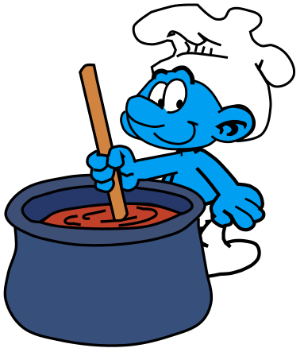

Штрумф повар заботится о еде. Он может ходить, ждать, собирать урожай и сажать зерно, но не строит и не добывает материалы. С ним запасы расходуются бережнее: потребление остальных штрумфов составляет × от прежнего, кроме Штрумфа обжоры, чей аппетит неизменен.